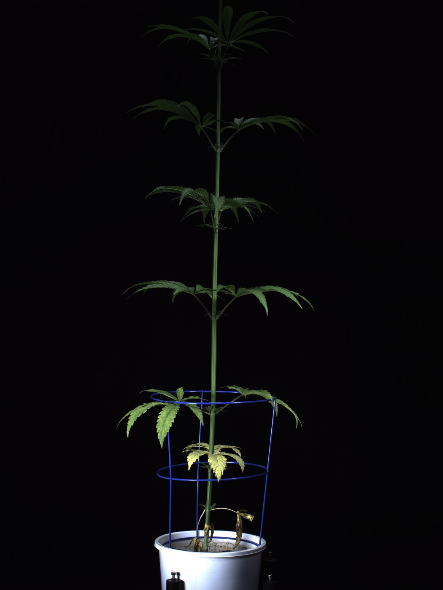
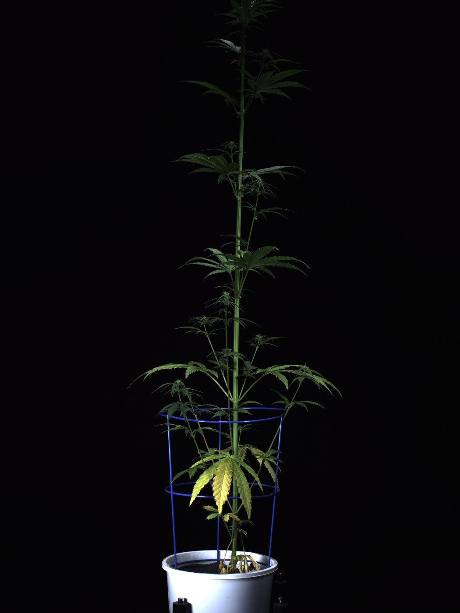
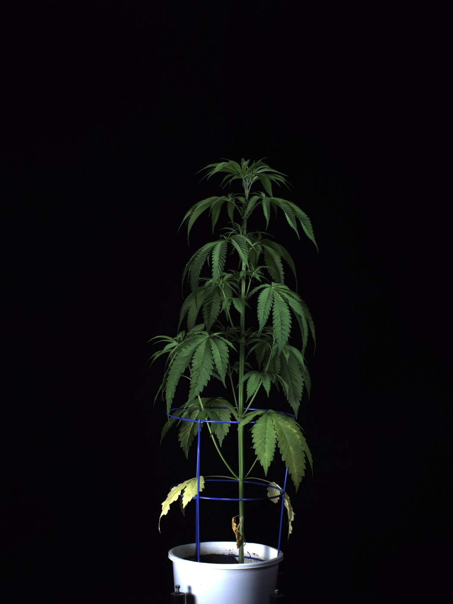

50 ppm N reference
Research slice · measured nominal models
Randomize around a cultivar, not a generic plant.
Five named CBD/essential-oil hemp profiles, conditioned on one measured greenhouse environment. The visible plant, growth curve, stem dimensions and flower metrics all come from the same cultivar subset.
Recommended first placeholderCherry Blossom · 50 ppm NReplace when the partner supplies cultivar + clone line + facility recipe.
Plant-level distribution
Dominant-apex height through the full cycle
Median and observed range for the selected cultivar at exactly 50 ppm N. The dashed line marks the reported start of flowering.
Days after sowing
Nominal drawSelect one complete 50 ppm plant record. Keep its height series, stem cross-section, cola dimensions and biomass coupled.
Healthy envelopeSelect one complete record from 50 or 150 ppm N. Keep cultivar identity fixed and treat condition as an explicit variable.
Still unmeasuredBranch graph, leaf pose, tissue stiffness, damping, cutting force and detachment thresholds need photos, literature priors and physical tests.
Independent early-growth dataset
Genotype changes architecture even under one imaging protocol
Final day-36 side frames from a separate indoor phenotyping study. These are research thumbnails from CC BY-NC image archives, useful for shape comparison but unsuitable as a commercial product dependency.



Primary source: Anderson et al. 2021, CC BY 4.0. Secondary tabular source: Gill et al. 2025, CC BY 4.0; associated images CC BY-NC 4.0. The page shows measured subsets and research limits; it is not a validated 3D reconstruction or mechanics model.